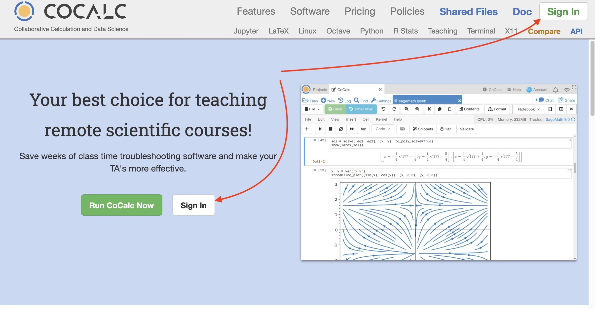
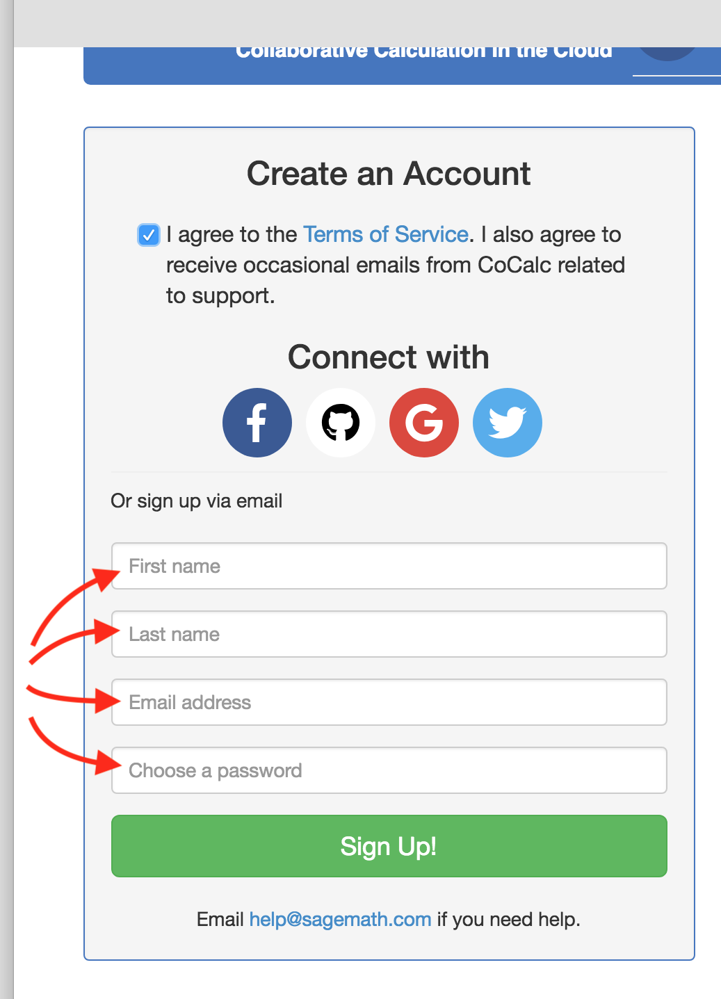
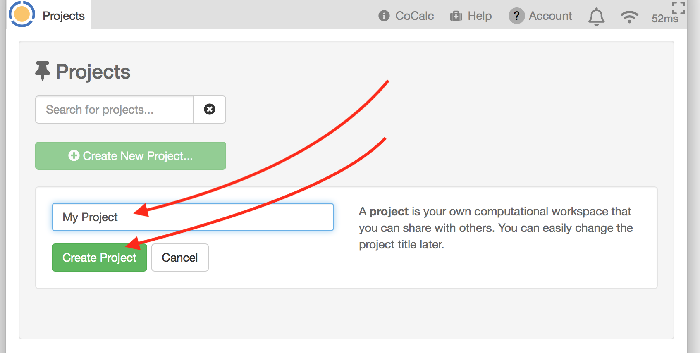
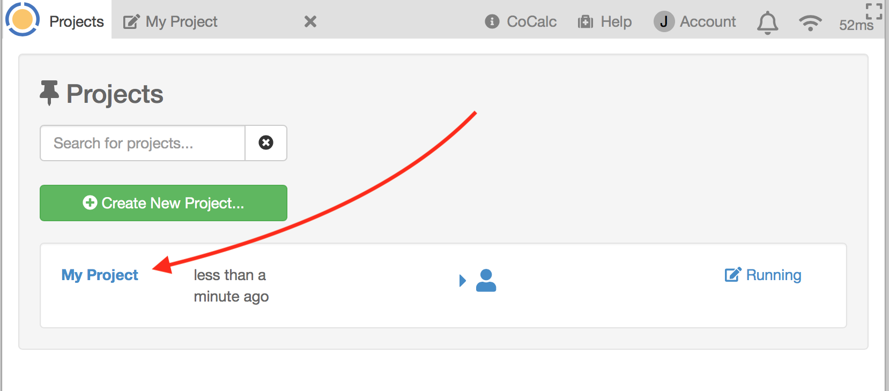
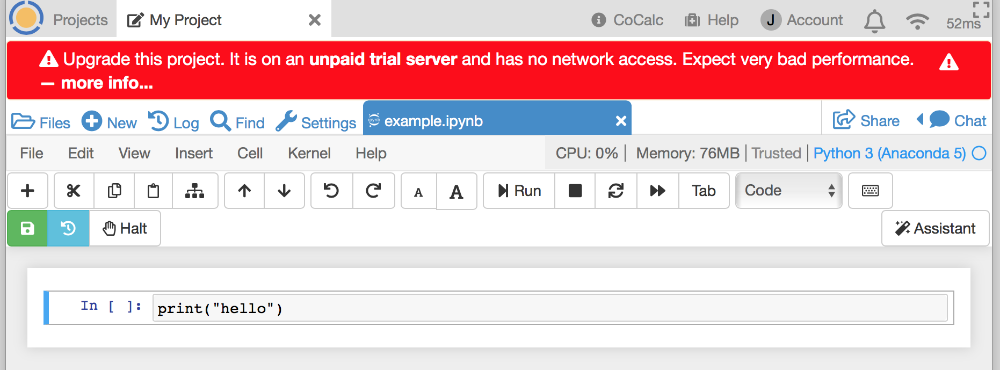
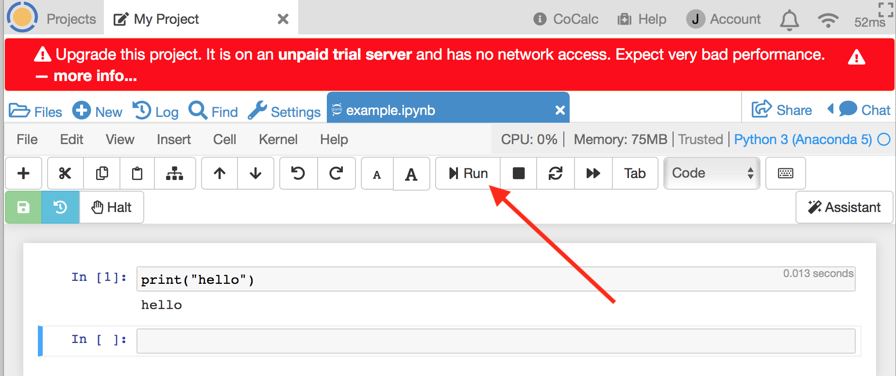
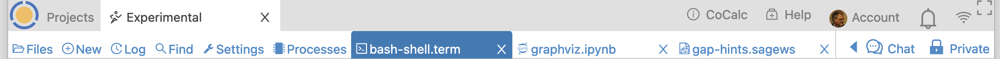

Getting Started¶
A guide for your first CoCalc session.
Creating an Account¶
On your first visit to CoCalc.com, you will see the welcome screen. Click either Sign In button:
At the next screen, complete the “Create an Account” dialog: Agree to the Terms of Service. Then, choose a sign-in method. In addition to signing up with your email address, you have the option of signing using your credentials for Facebook, Github, Google, or Twitter.

In the image below, sign up via email is highlighted:
Signing in¶
Once you have signed in for the first time, sign-in in will be automatic if you are using the same browser and computer. All you will generally need to do is point your browser to https://cocalc.com.
- You will need to sign in again if you
- connect from a different browser or computer
- clear your browser cookies.
- sign out
Creating a Project¶
Now that you are signed in, create your first project. Click in the Project title area and enter a project name, for example “My Project”, and then click Create Project.
After the project is created, you will see it appear in your list of projects. Click on the project name to open the project:
Creating a File¶
Once you have opened a project, you are ready to create a file.
If your project isn’t upgraded, you will get a red banner warning that your project is running on a trial server. Ignore the warning for now and keep going.
Click (+) New and enter example where it says, Name your file…. and click Jupyter notebook to select the file type. Clicking a button for the type of file causes the file extension is added automatically.

Running a Jupyter Notebook¶
We’re going to run a simple Python program, so let’s change the kernel from SageMath (stable) to Python 3 (Anaconda 5). In the image, arrow 1 points to the place where the current kernel is displayed, while arrows 2 and 3 indicate how to select the new Jupyter kernel.

Now enter a line of python code in the first cell of the notebook:
And click Run or press Shift-Enter to run the code.
The Project Toolbar¶
Here’s quick tour of the topmost toolbar in CoCalc, the Project Toolbar.

Going from left to right:
 Projects button - click here to create a new project and see a list of your existing projects. Any text you type into the Search for Projects field will be used to select which projects are displayed. Any project with matching text in Title or Description will appear in the filtered list. If you have any hidden or deleted projects, a checkbox will appear to allow you to show those.
Projects button - click here to create a new project and see a list of your existing projects. Any text you type into the Search for Projects field will be used to select which projects are displayed. Any project with matching text in Title or Description will appear in the filtered list. If you have any hidden or deleted projects, a checkbox will appear to allow you to show those.
- Open projects - a tab button will appear for each project you have open.
 CoCalc - Information about CoCalc. Includes links to tutorials, examples, lists of available languages, libraries, and packages, and real-time stats for the platform.
CoCalc - Information about CoCalc. Includes links to tutorials, examples, lists of available languages, libraries, and packages, and real-time stats for the platform.
 Help - Use this button if you have any questions about CoCalc. If you have a question while you have a file open in CoCalc, clicking Help will automatically include a link to the file in your request, allowing our support team to understand the issue better. If you are getting a result that you don’t expect, it helps to include steps for us to reproduce the problem.
Help - Use this button if you have any questions about CoCalc. If you have a question while you have a file open in CoCalc, clicking Help will automatically include a link to the file in your request, allowing our support team to understand the issue better. If you are getting a result that you don’t expect, it helps to include steps for us to reproduce the problem.
- Account - Click here to update your profile, sign out, order subscriptions, view your upgrades, add SSH Keys, and check on support tickets. Read more about account operations here.
 Notifications - A count is displayed over the bell if there are chat updates or file edits in projects you own or collaborate on. Click the bell to view a list of pending notifications, showing which account originated them and a link to the project or file being updated at the time.
Notifications - A count is displayed over the bell if there are chat updates or file edits in projects you own or collaborate on. Click the bell to view a list of pending notifications, showing which account originated them and a link to the project or file being updated at the time.
 Connection Status. The connection status icon changes color as shown below to indicate changes in the connection between your browser and CoCalc servers.
Connection Status. The connection status icon changes color as shown below to indicate changes in the connection between your browser and CoCalc servers.
Colors for the connection status icon:
- Grey: connected, no messages in flight.
- Dark Blue: connected, moderate load.
- Light Blue: connected, significant load.
- Red: connected, serious message backlog.
- Orange: disconnected / connecting.
Clicking the connection status icon brings up a window with additional connection detail, including round-trip ping time to the CoCalc servers. If the ping time doesn’t appear right away, wait a bit; it’s tested every 30 seconds when the window is open.

 Fullscreen Mode - Clicking here will toggle fullscreen mode, in which the project and file toolbars are shown or hidden.
Fullscreen Mode - Clicking here will toggle fullscreen mode, in which the project and file toolbars are shown or hidden.
The Files Toolbar¶
The Files Toolbar is next, appears below the Project Toolbar when you have a project open. Use it to work with files in the currently open project. When you open a file, its name appears in the Files Toolbar. When you select a file in the toolbar, its contents are displayed in the browser.
From left to right:
 Files - If you don’t have a file open, clicking here will show you a list of files
in the project’s home directory. If you are working on a file, clicking Files will show a list of
files in the directory containing the currently selected file. You can enter search characters to
filter the file list for filenames containing the search text.
Files - If you don’t have a file open, clicking here will show you a list of files
in the project’s home directory. If you are working on a file, clicking Files will show a list of
files in the directory containing the currently selected file. You can enter search characters to
filter the file list for filenames containing the search text.
 New - click to create or upload new files. New also lets you
browse the CoCalc Library, which contains code examples and entire books about various toolsets
and science topics, ready to copy into your project.
New - click to create or upload new files. New also lets you
browse the CoCalc Library, which contains code examples and entire books about various toolsets
and science topics, ready to copy into your project.
 Log - The Project Activity Log shows recent activity in your project:
logins, files opened and uploaded, etc. If you click on a filename in the log, it will open
that file. This is often the quickest way to resume work on a file that was recently closed.
Log - The Project Activity Log shows recent activity in your project:
logins, files opened and uploaded, etc. If you click on a filename in the log, it will open
that file. This is often the quickest way to resume work on a file that was recently closed.
 Find - Search for files containing the specified text in the directory that contains
the currently selected file, or the project home directory if no file is selected. There are options
to for searching subdirectories, case sensitive search, including hidden files, and restricting search
to files in a git repository.
Find - Search for files containing the specified text in the directory that contains
the currently selected file, or the project home directory if no file is selected. There are options
to for searching subdirectories, case sensitive search, including hidden files, and restricting search
to files in a git repository.
 Processes - This panel offers a consolidated view of real-time activity within the current project. Use the Help toggle above the Memory column for details about this extremely useful panel. You can view use of CPU, memory, and disk space. There is a list of running processes, showing resource use by each and allowing you to terminate non-essential processes.
Processes - This panel offers a consolidated view of real-time activity within the current project. Use the Help toggle above the Memory column for details about this extremely useful panel. You can view use of CPU, memory, and disk space. There is a list of running processes, showing resource use by each and allowing you to terminate non-essential processes.

Note
The “Memory” column in the Table of Processes can help you track down out-of-memory problems.
 Settings - This tab is where you can set a description for your project, add or remove
upgrades, hide or delete the project, add a project-specific SSH Key, view and add collaborators, stop and restart the project and the Sage worksheet server,
and launch the Plain Jupyter and JupyterLab servers.
Hint: Adding hashtags to the description can make it easy to find a subject with the Project button if you have a large number of projects.
Settings - This tab is where you can set a description for your project, add or remove
upgrades, hide or delete the project, add a project-specific SSH Key, view and add collaborators, stop and restart the project and the Sage worksheet server,
and launch the Plain Jupyter and JupyterLab servers.
Hint: Adding hashtags to the description can make it easy to find a subject with the Project button if you have a large number of projects.
- Open Files - a button will appear for each file you have open. There are several ways to open a file in CoCalc:
- Select the name of the file in Project Files list.
- Select the filename in an entry in the Project Activity Log.
- Use the open command to open the file from a terminal.
 Chat - If a file is selected, you can click here to start text or video chat.
Collaborators on the project will get a notification when chat is opened or updated.
Chat - If a file is selected, you can click here to start text or video chat.
Collaborators on the project will get a notification when chat is opened or updated.
 Private/Public - If a file is selected, this button allows you to share it, or stop sharing. Files shared publicly can be viewed by people without a CoCalc login. You can see a list of all your shared files under Public files.
Private/Public - If a file is selected, this button allows you to share it, or stop sharing. Files shared publicly can be viewed by people without a CoCalc login. You can see a list of all your shared files under Public files.
Your CoCalc Session¶
CoCalc will keep track of projects you have open and files that are open within those projects. When you return, you will see the same open projects and files. In addition, if you have a program running and disconnect, it will keep running, with a few exceptions: the program will stop if any of the following occurs:
- your project is on a trial server (i.e. does not have Member Hosting upgrade applied) and the server is restarted
- you do not edit a file for more than the idle time specified in Project Settings
- the program crashes or runs out of memory
Signing Out¶
You sign out by using Account → Preferences → Sign Out…
Next steps¶
Continue your tour of CoCalc, with these topics:
Subscribe to CoCalc and upgrade your projects here:
Getting help¶
In addition the Index in this User Manual, if you have specific questions you can check the following:
- CoCalc Wiki search
- CoCalc Wiki index page
Note
We are in the process of migrating CoCalc Wiki documents into this User Manual.
If you would like to chat with other CoCalc users, visit our Discord server: https://discord.gg/nEHs2GK
There is also a Google discussion group for CoCalc. You can view it online or use it as a mailing list: https://groups.google.com/forum/#!forum/cocalc
Statements¶
You can find the CoCalc GDPR Compliance Statement on our wiki at https://github.com/sagemathinc/cocalc/wiki/GDPR
You can find the CoCalc Accessibility Statement on our wiki at https://github.com/sagemathinc/cocalc/wiki/AccessibilityStatement

{kind=link}
{kind=link}
{kind=link}
{kind=link}
{kind=link}
{kind=link}
{kind=link}